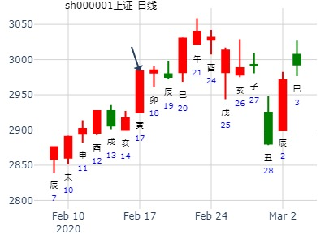

主帖标题: 2月4号年春节前000628的走势预测!!
出生：81 年 性别：男 占事：000628
公历起卦时间：2013年1月26日21时52分 (按农历时间起卦)
干支：壬辰年 癸丑月 壬辰日 辛亥时 （日空：午未）
神煞：驿马－寅 桃花－酉 日禄－亥 贵人－卯，巳
坤宫：地雷复 (六合) 坤宫：地泽临
六神 伏神 本 卦 变 卦
白虎 子孙癸酉金 ▅▅ ▅▅ 子孙癸酉金 ▅▅ ▅▅
腾蛇 妻财癸亥水 ▅▅ ▅▅ 妻财癸亥水 ▅▅ ▅▅ 应
勾陈 兄弟癸丑土 ▅▅ ▅▅ 应 兄弟癸丑土 ▅▅ ▅▅
朱雀 兄弟庚辰土 ▅▅ ▅▅ 兄弟丁丑土 ▅▅ ▅▅
青龙 父母乙巳火 官鬼庚寅木 ▅▅ ▅▅ ╳→ 官鬼丁卯木 ▅▅▅▅▅ 世
玄武 妻财庚子水 ▅▅▅▅▅ 世 父母丁巳火 ▅▅▅▅▅
走势怪，难找规律。
主帖标题: 六爻猜想：2020年2月17日上证收盘指数值?阿弥陀佛！
2020年2月17日上证指数收盘个位数zx？
公历起卦时间：2020年2月17日10时31分 (电脑自动)
干支：庚子年 戊寅月 庚寅日 辛巳时 （日空：午未）
坤宫：地雷复 (六合) 坤宫：地泽临
六神 伏神 本 卦 变 卦
螣蛇 子孙癸酉金 ▅▅ ▅▅ 子孙癸酉金 ▅▅ ▅▅
勾陈 妻财癸亥水 ▅▅ ▅▅ 妻财癸亥水 ▅▅ ▅▅ 应
朱雀 兄弟癸丑土 ▅▅ ▅▅ 应 兄弟癸丑土 ▅▅ ▅▅
青龙 兄弟庚辰土 ▅▅ ▅▅ 兄弟丁丑土 ▅▅ ▅▅
玄武 父母乙巳火 官鬼庚寅木 ▅▅ ▅▅ ╳→ 官鬼丁卯木 ▅▅▅▅▅ 世
白虎 妻财庚子水 ▅▅▅▅▅ 世 父母丁巳火 ▅▅▅▅▅

主题怪异，K线图仅供参考。
上证丑年走势？
时间: 2021-02-06 22时11分
干支: 辛丑年庚寅月乙酉日丁亥时 (旬空: 午未 )
地雷复 地泽临
六神 伏神 本 卦 变 卦
玄武 ▅▅ ▅▅ 子孙酉金 ▅▅ ▅▅ 子孙酉金
白虎 ▅▅ ▅▅ 妻财亥水 ▅▅ ▅▅ 妻财亥水 应
腾蛇 ▅▅ ▅▅ 兄弟丑土 应 ▅▅ ▅▅ 兄弟丑土
勾陈 ▅▅ ▅▅ 兄弟辰土 ▅▅ ▅▅ 兄弟丑土
朱雀 父母巳火▅▅ ▅▅ 官鬼寅木 Ｘ→ ▅▅▅▅▅ 官鬼卯木 世
青龙 ▅▅▅▅▅ 妻财子水 世 ▅▅▅▅▅ 父母巳火
六二：休复，吉。
注：此例官鬼为忌。申酉二个月冲开忌神涨。
主帖标题: 04大家一起来，九缠烂打：上证2021.2.18收盘 个位数是几？
上证2021.2.18收盘 个位数+A?
出生：2021 年 性别：男 占事：没填
排卦：元亨利贞网六爻在线排盘系统 https://www.china95.net
公历起卦时间：2021年2月14日15时31分 (电脑自动)
干支：辛丑年 庚寅月 癸巳日 庚申时 （日空：午未）
坤宫：地雷复 (六合) 坤宫：地泽临
六神 伏神 本 卦 变 卦
白虎 子孙癸酉金 ▅▅ ▅▅ 子孙癸酉金 ▅▅ ▅▅
螣蛇 妻财癸亥水 ▅▅ ▅▅ 妻财癸亥水 ▅▅ ▅▅ 应
勾陈 兄弟癸丑土 ▅▅ ▅▅ 应 兄弟癸丑土 ▅▅ ▅▅
朱雀 兄弟庚辰土 ▅▅ ▅▅ 兄弟丁丑土 ▅▅ ▅▅
青龙 父母乙巳火 官鬼庚寅木 ▅▅ ▅▅ ╳→ 官鬼丁卯木 ▅▅▅▅▅ 世
玄武 妻财庚子水 ▅▅▅▅▅ 世 父母丁巳火 ▅▅▅▅▅
601988中国银行，复之临。官化进。.md
2015年4月17日9时2分（电脑自动）
乙未年 庚辰月 癸亥日 丁巳时 （旬空：子丑）
坤宫：地雷复（六合） 坤宫：地泽临
六神 伏 神 【本 卦】 【变 卦】
白虎 ▄▄ ▄▄ 子孙癸酉金 ▄▄ ▄▄ 子孙癸酉金
腾蛇 ▄▄ ▄▄ 妻财癸亥水 ▄▄ ▄▄ 妻财癸亥水 应
勾陈 ▄▄ ▄▄ 兄弟癸丑土 应 ▄▄ ▄▄ 兄弟癸丑土
朱雀 ▄▄ ▄▄ 兄弟庚辰土 ▄▄ ▄▄ 兄弟丁丑土
青龙 父母乙巳火 ▄▄ ▄▄ 官鬼庚寅木 X-> ▄▄▄▄▄ 官鬼丁卯木 世
玄武 ▄▄▄▄▄ 妻财庚子水 世 ▄▄▄▄▄ 父母丁巳火
五爻亥财暗动。隔日寅值班大跌。临青龙也是大跌。反而酉日冲进神涨。
此处寅卯为忌。
中京电子4.11-19走势如何13.15
占事：中京4.11-19走势如何13.15
公历起卦时间：2016年4月8日20时10分 (手工指定)
干支：丙申年 壬辰月 庚申日 丙戌时 （日空：子丑）
坤宫：地雷复 (六合) 坤宫：地泽临
六神 伏神 本 卦 变 卦
腾蛇 子孙癸酉金 ▅▅ ▅▅ 子孙癸酉金 ▅▅ ▅▅
勾陈 妻财癸亥水 ▅▅ ▅▅ 妻财癸亥水 ▅▅ ▅▅ 应
朱雀 兄弟癸丑土 ▅▅ ▅▅ 应 兄弟癸丑土 ▅▅ ▅▅
青龙 兄弟庚辰土 ▅▅ ▅▅ 兄弟丁丑土 ▅▅ ▅▅
玄武 父母乙巳火 官鬼庚寅木 ▅▅ ▅▅ ╳→ 官鬼丁卯木 ▅▅▅▅▅ 世
白虎 妻财庚子水 ▅▅▅▅▅ 世 父母丁巳火 ▅▅▅▅▅ |
基本横盘不动。
4月12日大盘的走势 （梅花小孩）
丁酉 甲辰 己巳 戊辰 (戌亥空) 丁酉年三月十六(2017/04/12 08:09:43)
地雷复 地泽临
勾陈 子孙癸酉 ∥ 子孙癸酉 ∥
朱雀 妻财乙亥 ∥ 妻财乙亥 ∥ 应
青龙 兄弟乙丑 ∥ 应 兄弟乙丑 ∥
玄武 兄弟戊辰 ∥ 兄弟乙丑 ∥
父母己巳：白虎 官鬼丙寅 × 官鬼丁卯 ／ 坤
腾蛇 妻财甲子 ／ 坤 父母己巳 ／

主帖标题: 超短线实践卦象（闹了个乌龙，将卦象改正）
（缘起，因数字货币成板块，故选质地优良的广电运通002152占之。）
公历起卦时间：2020年4月20日22时50分 (按农历时间起卦)
干支：庚子年 庚辰月 癸巳日 癸亥时 （日空：午未）
坤宫：地雷复 (六合) 坤宫：地泽临
六神 伏神 本 卦 变 卦
白虎 子孙癸酉金 ▅▅ ▅▅ 子孙癸酉金 ▅▅ ▅▅
螣蛇 妻财癸亥水 ▅▅ ▅▅ 妻财癸亥水 ▅▅ ▅▅ 应
勾陈 兄弟癸丑土 ▅▅ ▅▅ 应 兄弟癸丑土 ▅▅ ▅▅
朱雀 兄弟庚辰土 ▅▅ ▅▅ 兄弟丁丑土 ▅▅ ▅▅
青龙 父母乙巳火 官鬼庚寅木 ▅▅ ▅▅ ╳→ 官鬼丁卯木 ▅▅▅▅▅ 世
玄武 妻财庚子水 ▅▅▅▅▅ 世 父母丁巳火 ▅▅▅▅▅
六二：休复，吉。象曰：休复之吉，以下仁也。
六爻：官动化进。综合断：大吉之兆。甲午日有机会进场，乙未日当涨停宜减仓，丙申日必须清仓（因申冲寅不利）。
后记：甲午日竞价从涨停板竞价至昨收盘卦开盘，天赐良机，9:28市价埋单买入，后冲高回落，乙未日低开盘整后大幅拉升，下午涨停，考虑涨幅较大，按计划减仓以减轻压力，申日早盘冲高清仓，下午最高冲高到8%回落已无关。
王注：青龙官鬼，在兄弟旺的时候为喜。逢冲时则上涨结束 。
12吉祥如意
男 占事：5.18-5.22日大盘走势？
公历起卦时间：2020年5月16日18时30分 (手工指定)铜钱手摇卦
干支：庚子年 辛巳月 己未日 癸酉时 （日空：子丑）
神煞：驿马－巳 桃花－子 日禄－午 贵人－子，申
坤宫：地雷复 (六合) 坤宫：地泽临
六神 伏神 本 卦 变 卦
勾陈 子孙癸酉金 ▅▅ ▅▅ 子孙癸酉金 ▅▅ ▅▅
朱雀 妻财癸亥水 ▅▅ ▅▅ 妻财癸亥水 ▅▅ ▅▅ 应
青龙 兄弟癸丑土 ▅▅ ▅▅ 应 兄弟癸丑土 ▅▅ ▅▅
玄武 兄弟庚辰土 ▅▅ ▅▅ 兄弟丁丑土 ▅▅ ▅▅
白虎 父母乙巳火 官鬼庚寅木 ▅▅ ▅▅ ╳→ 官鬼丁卯木 ▅▅▅▅▅ 世
螣蛇 妻财庚子水 ▅▅▅▅▅ 世 父母丁巳火 ▅▅▅▅▅
亥日逢合开跌，子日出空被泄跌。
航天长峰6.8壬午星期一-6.10甲申何时 底？
出生：2020 年 性别：男 占事：没填
排卦：元亨利贞网六爻在线排盘系统 https://www.china95.net
公历起卦时间：2020年6月9日10时15分 (电脑自动)
干支：庚子年 壬午月 癸未日 丁巳时 （日空：申酉）
坤宫：地雷复 (六合) 坤宫：地泽临
六神 伏神 本 卦 变 卦
白虎 子孙癸酉金 ▅▅ ▅▅ 子孙癸酉金 ▅▅ ▅▅
螣蛇 妻财癸亥水 ▅▅ ▅▅ 妻财癸亥水 ▅▅ ▅▅ 应
勾陈 兄弟癸丑土 ▅▅ ▅▅ 应 兄弟癸丑土 ▅▅ ▅▅
朱雀 兄弟庚辰土 ▅▅ ▅▅ 兄弟丁丑土 ▅▅ ▅▅
青龙 父母乙巳火 官鬼庚寅木 ▅▅ ▅▅ ╳→ 官鬼丁卯木 ▅▅▅▅▅ 世
玄武 妻财庚子水 ▅▅▅▅▅ 世 父母丁巳火 ▅▅▅▅▅
申酉二天连续冲动变，戌日合变爻大涨。此例官鬼可论喜。
官鬼寅卯入日墓，丑日冲墓更是大涨。
复之临，见顶卦，官鬼化进，合官日大跌。
2009年7月26日正峰占上证指数一周走势？得复之临
元享利贞卦例。
己丑年 辛未月 壬申日 乙巳时
旬空:【戌亥】 星期天 手工指定
【六兽】 【伏神】 地雷复【坤宫 六合】 地泽临【坤宫】
白虎 ▅▅ ▅▅ 子孙癸酉金 ▅▅ ▅▅ 子孙癸酉金
螣蛇 ▅▅ ▅▅ 妻财癸亥水 ▅▅ ▅▅ 妻财癸亥水 应
勾陈 ▅▅ ▅▅ 兄弟癸丑土 应 ▅▅ ▅▅ 兄弟癸丑土
朱雀 ▅▅ ▅▅ 兄弟庚辰土 ▅▅ ▅▅ 兄弟丁丑土
青龙父巳火▅▅ ▅▅ 官鬼庚寅木Ｘ→ ▅▅▅▅▅官鬼丁卯木 世
玄武 ▅▅▅▅▅ 妻财庚子水 世 ▅▅▅▅▅ 父母丁巳火
此卦有反复，化临变成临界点。
官鬼寅木日破，在亥日逢合，大跌，此处官鬼论喜论忌？论动而逢合，还是合绊官鬼？
六二：休复，吉。象曰：休复之吉，以下仁也。
占事：东方钽业近期走势。
公历时间：2014年7月21日10时26分
干 支：甲午年 辛未月 癸巳日 丁巳时
旬 空：辰巳 戌亥 (午未) 子丑
坤宫：地雷复（六合） 坤宫：地泽临
六神 伏 神 【本 卦】 【变 卦】
白虎 ▄▄ ▄▄ 子孙癸酉金 ▄▄ ▄▄ 子孙癸酉金
螣蛇 ▄▄ ▄▄ 妻财癸亥水 ▄▄ ▄▄ 妻财癸亥水 应
勾陈 ▄▄ ▄▄ 兄弟癸丑土 应 ▄▄ ▄▄ 兄弟癸丑土
朱雀 ▄▄ ▄▄ 兄弟庚辰土 ▄▄ ▄▄ 兄弟丁丑土
青龙 父母乙巳火 ▄▄ ▄▄ 官鬼庚寅木 X-> ▄▄▄▄▄ 官鬼丁卯木 世
玄武 ▄▄▄▄▄ 妻财庚子水 世 ▄▄▄▄▄ 父母丁巳火
主帖标题: 8月12曰前三名名称，不包括新股。
自动起卦(起卦方式)
占问事宜：要问的事情
公历：2016年8月12日8时45分，星期五。
干支：丙申年 丙申月 丙寅日 壬辰时 (卦身：子)
主变卦 地雷复(坤宫) 之 地泽临(坤宫) [空亡:戌、亥]
青龙 ▅▅ ▅▅ 子孙癸酉金 ▅▅ ▅▅ 子孙癸酉金
玄武 ▅▅ ▅▅ 妻财癸亥水 ▅▅ ▅▅ 妻财癸亥水 应
白虎 ▅▅ ▅▅ 兄弟癸丑土 应 ▅▅ ▅▅ 兄弟癸丑土
螣蛇 ▅▅ ▅▅ 兄弟庚辰土 ▅▅ ▅▅ 兄弟丁丑土
勾陈 父母乙巳火 ▅▅ ▅▅×官鬼庚寅木 ▅▅▅▅▅ 官鬼丁卯木 世
朱雀 ▅▅▅▅▅ 妻财庚子水 世 ▅▅▅▅▅ 父母丁巳火
主帖标题: 晓东试测上证指数2019.6.6甲戌,6.10,-6.11三天哪日是顶？
求测人：某人，男，庚申(1980年)，自动起卦(起卦方式)
占问事宜：测上证指数2019.8.9戊寅-8.16哪日是顶？
公历：2019年8月12日6时26分，星期一。
干支：己亥年 壬申月 辛巳日 辛卯时 (卦身：子)
主变卦 地雷复(坤宫) 之 地泽临(坤宫) [空亡:申、酉]
螣蛇 ▅▅ ▅▅ 子孙癸酉金 ▅▅ ▅▅ 子孙癸酉金
勾陈 ▅▅ ▅▅ 妻财癸亥水 ▅▅ ▅▅ 妻财癸亥水 应
朱雀 ▅▅ ▅▅ 兄弟癸丑土 应 ▅▅ ▅▅ 兄弟癸丑土
青龙 ▅▅ ▅▅ 兄弟庚辰土 ▅▅ ▅▅ 兄弟丁丑土
玄武 父母乙巳火 ▅▅ ▅▅×官鬼庚寅木 ▅▅▅▅▅ 官鬼丁卯木 世
白虎 ▅▅▅▅▅ 妻财庚子水 世 ▅▅▅▅▅ 父母丁巳火
复之临，官化进，10月大盘。明夷之贲。.md
公历时间：2021年10月8日15时12分
干支：辛丑年 戊戌月 己丑日 壬申时 旬空：辰巳 辰巳 午未 戌亥
神煞：驿马─亥 桃花─午 日禄─午 贵人─子，申
坤宫：地雷复（六合） 坤宫：地泽临
六神 伏 神 【本 卦】 【变 卦】
勾陈 ▄▄ ▄▄ 子孙癸酉金 ▄▄ ▄▄ 子孙癸酉金
朱雀 ▄▄ ▄▄ 妻财癸亥水 ▄▄ ▄▄ 妻财癸亥水 应
青龙 ▄▄ ▄▄ 兄弟癸丑土 应 ▄▄ ▄▄ 兄弟癸丑土
玄武 ▄▄ ▄▄ 兄弟庚辰土 ▄▄ ▄▄ 兄弟丁丑土
白虎 父母乙巳火 ▄▄ ▄▄ 官鬼庚寅木 × ▄▄▄▄▄ 官鬼丁卯木 世
螣蛇 ▄▄▄▄▄ 妻财庚子水 世 ▄▄▄▄▄ 父母丁巳火
此卦官鬼为喜。
附上网上老师月卦
公历时间：2021年10月10日12时38分
干 支：辛丑年 戊戌月 辛卯日 甲午时
旬 空：辰巳 辰巳 午未 辰巳
神 煞：驿马─巳 桃花─子 日禄─酉 贵人─寅，午
坎宫：地火明夷（游魂） 艮宫：山火贲
六神 伏 神 【本 卦】 【变 卦】
螣蛇 ▄▄ ▄▄ 父母癸酉金 × ▄▄▄▄▄ 子孙丙寅木
勾陈 ▄▄ ▄▄ 兄弟癸亥水 ▄▄ ▄▄ 兄弟丙子水
朱雀 ▄▄ ▄▄ 官鬼癸丑土 世 ▄▄ ▄▄ 官鬼丙戌土 应
青龙 妻财戊午火 ▄▄▄▄▄ 兄弟己亥水 ▄▄▄▄▄ 兄弟己亥水
玄武 ▄▄ ▄▄ 官鬼己丑土 ▄▄ ▄▄ 官鬼己丑土
白虎 ▄▄▄▄▄ 子孙己卯木 应 ▄▄▄▄▄ 子孙己卯木 世
上工申贝到十月底-金玉堂
时间: 2024-10-17
干支: 甲辰年甲戌月甲寅日 (旬空: 子丑 )
地雷复 地泽临
六神 伏神 本 卦 变 卦
玄武 ▅▅ ▅▅ 子孙酉金 ▅▅ ▅▅ 子孙酉金
白虎 ▅▅ ▅▅ 妻财亥水 ▅▅ ▅▅ 妻财亥水 应
腾蛇 ▅▅ ▅▅ 兄弟丑土 应 ▅▅ ▅▅ 兄弟丑土
勾陈 ▅▅ ▅▅ 兄弟辰土 ▅▅ ▅▅ 兄弟丑土
朱雀 父母巳火▅▅ ▅▅ 官鬼寅木 Ｘ→ ▅▅▅▅▅ 官鬼卯木 世
青龙 ▅▅▅▅▅ 妻财子水 世 ▅▅▅▅▅ 父母巳火
此处官鬼发动也为喜。暴涨
主帖标题: 四年前，自创的分时走势分野运用到上证高低点预判是否可取得成效？
3445.40 16,8 4 20,2
时间 公历 2015年11月30日 15时27分33秒 节后 第23天
正财 正官 日元 偏财
四柱 乙 丁 庚 甲
未 亥 戌 申 (日空 寅卯)
六神 伏神 坤宫：地雷复（六合） 坤宫：地泽临
【本 卦】 【变 卦】
螣蛇 ▅▅ ▅▅ 子孙癸酉金 ▅▅ ▅▅ 子孙癸酉金
勾陈 ▅▅ ▅▅ 妻财癸亥水 ▅▅ ▅▅ 妻财癸亥水 应
朱雀 ▅▅ ▅▅ 兄弟癸丑土 应 ▅▅ ▅▅ 兄弟癸丑土
青龙 ▅▅ ▅▅ 兄弟庚辰土 ▅▅ ▅▅ 兄弟丁丑土
玄武 父母乙巳火 ▅▅ ▅▅ 官鬼庚寅木 ×→ ▅▅▅▅▅ 官鬼丁卯木 世
白虎 ▅▅▅▅▅ 妻财庚子水 世 ▅▅▅▅▅ 父母丁巳火
主帖标题: 11月牛股启动卦象留迹
公历起卦时间：2019年11月6日22时41分 (按农历时间起卦)
农历：己亥年十月初十日亥时
寒露：2019年10月08日23时25分
立冬：2019年11月08日02时42分
干支：己亥年 甲戌月 丁未日 辛亥时 （日空：寅卯）
神煞：驿马－巳 桃花－子 日禄－午 贵人－酉，亥
坤宫：地雷复 (六合) 坤宫：地泽临
六神 伏神 本 卦 变 卦
青龙 子孙癸酉金 ▅▅ ▅▅ 子孙癸酉金 ▅▅ ▅▅
玄武 妻财癸亥水 ▅▅ ▅▅ 妻财癸亥水 ▅▅ ▅▅ 应
白虎 兄弟癸丑土 ▅▅ ▅▅ 应 兄弟癸丑土 ▅▅ ▅▅
腾蛇 兄弟庚辰土 ▅▅ ▅▅ 兄弟丁丑土 ▅▅ ▅▅
勾陈 父母乙巳火 官鬼庚寅木 ▅▅ ▅▅ ╳→ 官鬼丁卯木 ▅▅▅▅▅ 世
朱雀 妻财庚子水 ▅▅▅▅▅ 世 父母丁巳火 ▅▅▅▅▅
《周易》——地雷复 坤上震下
此卦为0025XX卦象
六爻浅析：官鬼动化进空亡临勾陈，大涨之象。
主帖标题: 测卯日22日大盘
公历起卦时间：2022年11月21日16时34分 (手工指定)
农历：壬寅年十月廿八日申时
干支：壬寅年 辛亥月 戊寅日 庚申时 （日空：申酉）
坤宫：地雷复 (六合) 坤宫：地泽临
六神 伏神 本 卦 变 卦
朱雀 子孙癸酉金 ▅▅ ▅▅ 子孙癸酉金 ▅▅ ▅▅
青龙 妻财癸亥水 ▅▅ ▅▅ 妻财癸亥水 ▅▅ ▅▅ 应
玄武 兄弟癸丑土 ▅▅ ▅▅ 应 兄弟癸丑土 ▅▅ ▅▅
白虎 兄弟庚辰土 ▅▅ ▅▅ 兄弟丁丑土 ▅▅ ▅▅
螣蛇 父母乙巳火 官鬼庚寅木 ▅▅ ▅▅ ╳→ 官鬼丁卯木 ▅▅▅▅▅ 世
勾陈 妻财庚子水 ▅▅▅▅▅ 世 父母丁巳火 ▅▅▅▅▅
数理卦，测卯日大盘。
主帖标题: 11.28——停止做空
起卦公历：2022年11月25日13时33分(北京时间)
起卦农历：二○二二年 十一月 初二日 未时。
干支： 壬寅年 辛亥月 壬午日 丁未时 (卦身：亥)
主变卦 地雷复(坤宫) 之 地泽临(坤宫) [空亡:申、酉]
白虎 ━ ━ 子孙癸酉金 ━ ━ 子孙癸酉金
螣蛇 ━ ━ 妻财癸亥水 ━ ━ 妻财癸亥水 应
勾陈 ━ ━ 兄弟癸丑土 应 ━ ━ 兄弟癸丑土
朱雀 ━ ━ 兄弟庚辰土 ━ ━ 兄弟丁丑土
青龙 父巳火 ━ ━×官鬼庚寅木 ━━━ 官鬼丁卯木 世
玄武 ━━━ 妻财庚子水 世 ━━━ 父母丁巳火
◇六二:休复，吉。 象曰：休复之吉，以下仁也。
调整结束。

占事：金丰科技子月上半月 niubi
公历起卦时间：2015年12月9日15时55分 铜钱卦
干支：乙未年 戊子月 己未日 壬申时 （日空：子丑）
坤宫：地雷复 (六合) 坤宫：地泽临
六神 伏神 本 卦 变 卦
勾陈 子孙癸酉金 ▅▅ ▅▅ 子孙癸酉金 ▅▅ ▅▅
朱雀 妻财癸亥水 ▅▅ ▅▅ 妻财癸亥水 ▅▅ ▅▅ 应
青龙 兄弟癸丑土 ▅▅ ▅▅ 应 兄弟癸丑土 ▅▅ ▅▅
玄武 兄弟庚辰土 ▅▅ ▅▅ 兄弟丁丑土 ▅▅ ▅▅
白虎 父母乙巳火 官鬼庚寅木 ▅▅ ▅▅ ╳→ 官鬼丁卯木 ▅▅▅▅▅ 世
腾蛇 妻财庚子水 ▅▅▅▅▅ 世 父母丁巳火 ▅▅▅▅▅
此处动爻为喜。